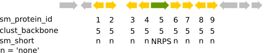

NB!
In your dataset org_id 3 stands for A. aculeatus, 14 for A. fumigatus, 21 for A.nidulans and 22 for A.niger.
Introduction
We will use antismash outputs of 4 Aspergillus genomes to mine them for secondary metabolic gene clusters. Using R we will develop a high throughput method which helps us to compare multiple datasets containing large amounts of data and mining for natural products of interest.
Downloads
smurf data and interpro
Input
To tell Rstudio where you want to work, copy the file path like below and execute it in Rstudio
# unix system (mac/linux)
setwd("path/to/directory")
# in windows you have two options
setwd("C:\\Users\\user\\Desktop")
setwd("C:/Users/user/Desktop")
- Create a directory for you project and set it as Rstudio working directory
- Insert the file smurfData.tsv into your directory and load it into R
- NB: The file is only space separated so you don’t need the argument
sep='/t'anymore. Just delete it.
- NB: The file is only space separated so you don’t need the argument
- Inspect your data. What are column names? What are the variables?
- How many organisms are in your dataset?
- How many proteins are in your dataset?
Schematic representing your data in the smurf data frame:

Overview
Data visualizations can give us a much better overview than the data frame or table. Many visualizations include summary functions which e.g. calculate the mean, quantiles, etc. of the data you are dealing with, to get an impression of the range of values over different species.
In this exercise, we are interested in the content of secondary metabolic proteins across all our fungal species. We want to determine which one has the most valuable repertoire of natural products and how they compare in different classes of secondary metabolites. An expansion of a certain class of compounds for example, could have been an important driver of the sections evolution.
- Create an overview of the ‘backbone’ secondary metabolism proteins ( like: PKS, NRPS, PKS-Likes, NRPS-Likes, DMAT, TC, HYRBID, i.e. everything that is not ‘none’) for all organisms.
- Use ggplot for visualization
- Use different colors for the different classes of proteins
- Which geom not only visualizes but also summarizes the data? Tip: We covered some geoms in the tutorial. Which one matches the criterium?
- Save the plot and write down your conclusion
- What does the plot tell you about secondary metabolism in the 4 species
Now we summarized the data using ggplot geoms.
- As a coding exercise, summarize the total amount of proteins per organism. Tip: You need to separate the data and summarize it afterwards.
- What is the total amount of backbone proteins?
Combining the sets
Often we need to combine datasets from different sources, e.g. to include an additional analysis. This might range from locations of samples, to predictions of signal peptides, to a Pfam analysis. Adding more information (variables) to our dataset helps us to facilitate a more in depth analysis.
Create a combination of your secondary metabolite annotations and interpro annotations to find out which secondary metabolite proteins carry which domains.
- Inspect your secondary metabolite annotations and interpro annotations (includes Pfam). What are common columns between the two sets?
- What do interpro annotations tell you about a protein?
Info: In the secondary metabolite annotations, you will find sm_protein_id and clust_backbone. clust_backbone describes a protein with a sm_protein_id which is the main identifier for this cluster.
- Join the secondary metabolite annotations and interpro annotations together, using the two columns you identified as shared between the datasets. Save the resulting dataset in an object called
comb.
The resulting dataset will help us to characterize the proteins by their Pfam domains.
Case 1 PKS
In comparative genomics and genome mining we often want to compare proteins by their annotations. One way to get a general view on the secondary metabolites produced by your organisms is to characterize a certain class of metabolites by their domains. In the following exercise we will focus on PKSs and their domains to characterize the products of our organisms.
Recap
You already know about the basic build of PKSs, i.e. 3 domains with initiating, elongating and terminating function.
Based on your background knowledge of PKSs:
- What is the minimum set of domains needed to synthesize a polyketide?
- What are optional domains which further diversify the polyketide?
Data questions
Mining for natural products, we are interested in enzymes with certain functions. E.g. you know your compound is a methylated polyketide and you want to find the genecluster responsible for it’s production.
- Inspect the dataframe. Which column contains information about domains? Can you identify domains belonging to PKSs?
- Can you recognize domains you learned about which further modify a simple PKS product?
- Using subsetting, find all PKSs that contain a Methyltransferase. Hint: Save the result to a new variable
- Provide a dataframe showing the sum of all PKS containing Methyltransferases for each organism.
- Repeat the last two steps for another domains with special function inside PKSs.
Case 2 Gene cluster similarity
Final exercise! Comparing gene clusters is a method to characterize the diversity of secondary metabolites. We will use our combined dataset, especially Pfam domains to create a comparison of gene clusters across all organisms.
- For ease of use, create a new identifier column in your dataset using the organism id and the cluster backbone id.
comb$cid <- paste(comb$org_id, comb$clust_backbone, sep = '_') - Inspect your data frame! What did the above line of code change? You might need to change data frame or column names
-
Create a subset of your data frame only containing PKS clusters.
- Create a list of your combined dataset separated apart by clust_backbone. Hint: Which function did we use to do the same with the iris dataset?
- Use lapply to go through your list with a custom function on the variable x.
- In this custom function use another sapply to go through your list again with a custom function on the variable y
- Create a measure for the relative amount of shared domains between x and y (should be a numeric variable, if not use
as.numeric()) - Hint: The section on the apply family of functions can help
- Plot the resulting matrix as heatmap.
Well done
Well done, you finished the exercises! In the next session we will look at specific metabolites and how to mine for them in our dataset.